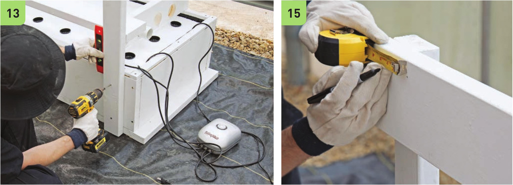
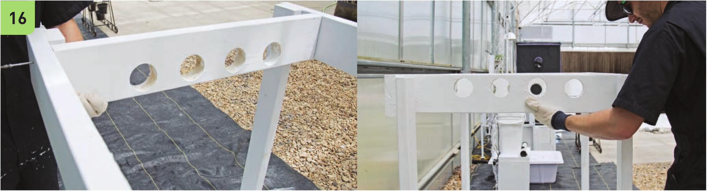

12 Position these 2'63/4" boards on top of the reservoir. Position the 2 x 6" x 4‘ boards on top of these, running the length of the reservoir. These will be used to guide the positioning of the support legs. 13 Use the square and level when fastening the support legs to the reservoir. It is very important that these legs are straight upright and not leaning. Use two 2Vi screws to secure the legs into position. 14 Fasten the 2 x 6" x 4' boards to the support legs. The top edge of the 4' boards should be flush with the top of the legs. 15 Mark the position for the 2'63/4" crossbeams. The high end of the NFT channels will go through a crossbeam 5V4" from the end of the 4' boards and the low end of the NFT channels will go through a crossbeam 614 " from the other end of the 4‘ boards. 16 Arrange the 2'63/4" crossbeams so one side has the drilled holes toward the bottom and the other side has the drilled holes toward the top. Fasten the crossbeams with only one screw near the top of the frame. It will be important to have the ability to adjust the angle of this board when inserting the PVC channels. Later they will be secured into place with a second screw. Crossbeam with drilled holes near the bottom Crossbeam with drilled holes near the top 76 DIY HYDROPONIC GARDENS

